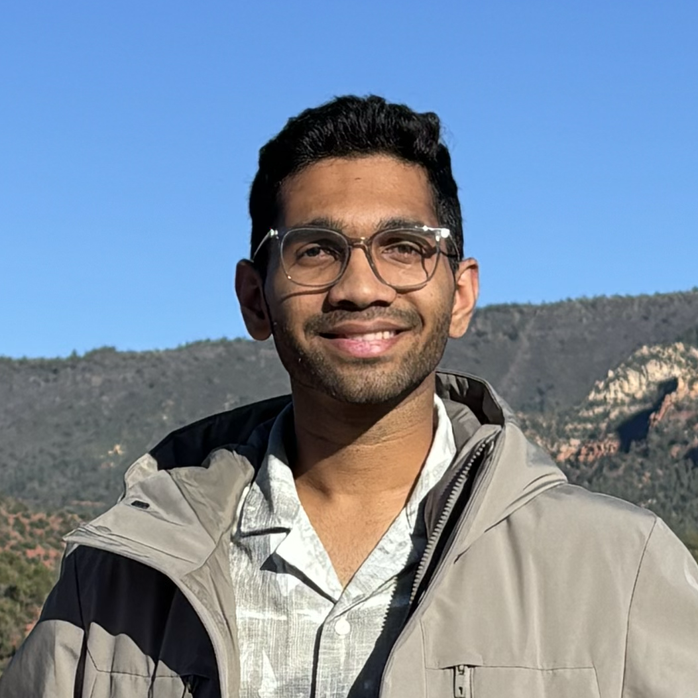

Hi! I am an Undergraduate Researcher at the Center for Visual Information Technology (CVIT), advised by Prof Ravi Kiran Sarvadevabhatla. My research areas include 3D computer vision and document analysis. I am also an undergrad researcher at the Robotics Research Center (RRC) at IIIT Hyderabad, advised by Prof Madhav Krishna. I have recently worked on projects on improving reconstruction quality in Gaussian Splatting, autonomous exploration in 3D environments, and text detection in complex handwritten documents. I am always ready to learn. In my free time, I like to travel, paint, and do photography.
WACV 2026
Developed a text-aware selective refinement framework that significantly improves fine-grained text reconstruction in 3DGS, achieving a 63.6% OCR-CER improvement over baseline methods.
Built a federated learning system enabling multiple clients to train locally with data privacy using methods like FedSGD, FedAvg, FedAdp with SSL/TLS encryption.
Developed a framework for 6-DoF pose estimation from meshes using differentiable rendering techniques, optimizing pose parameters.